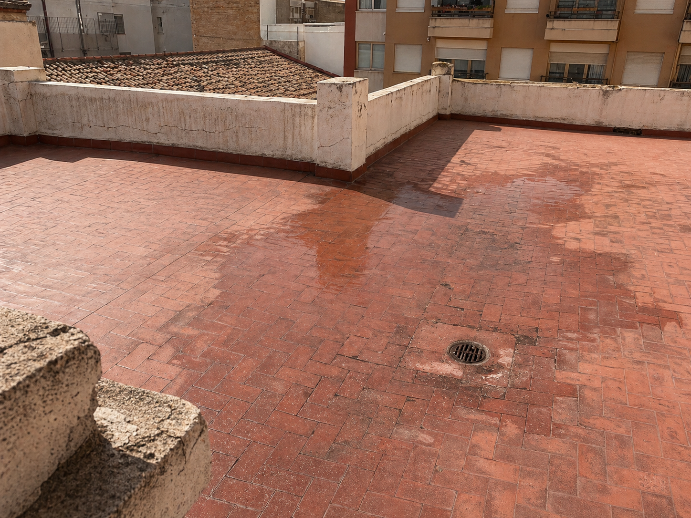
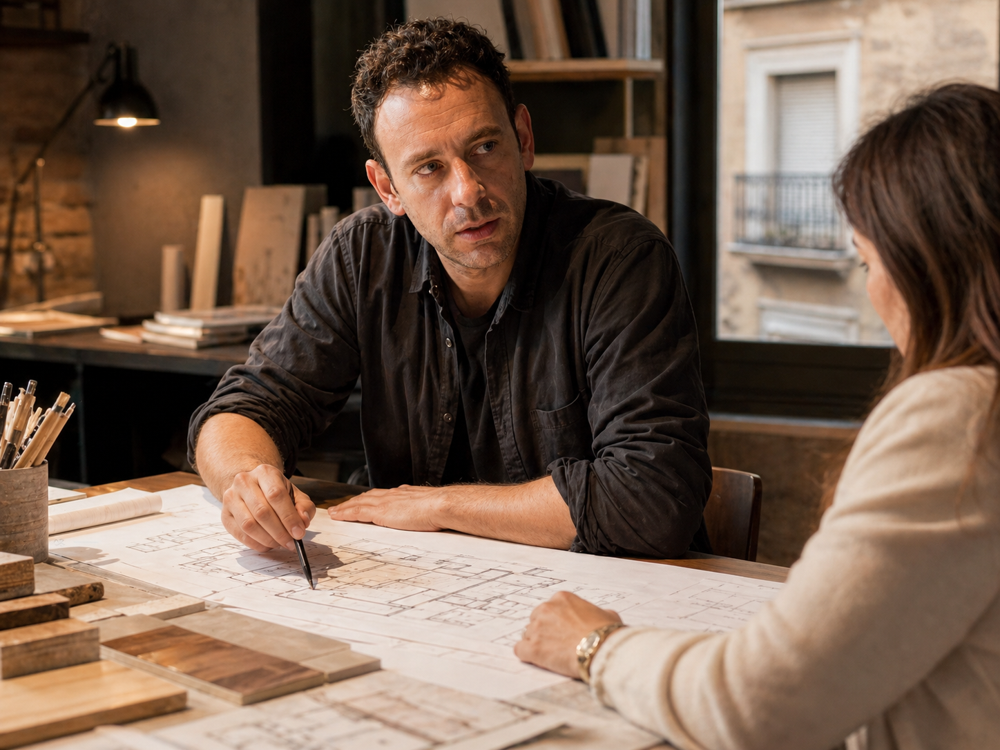
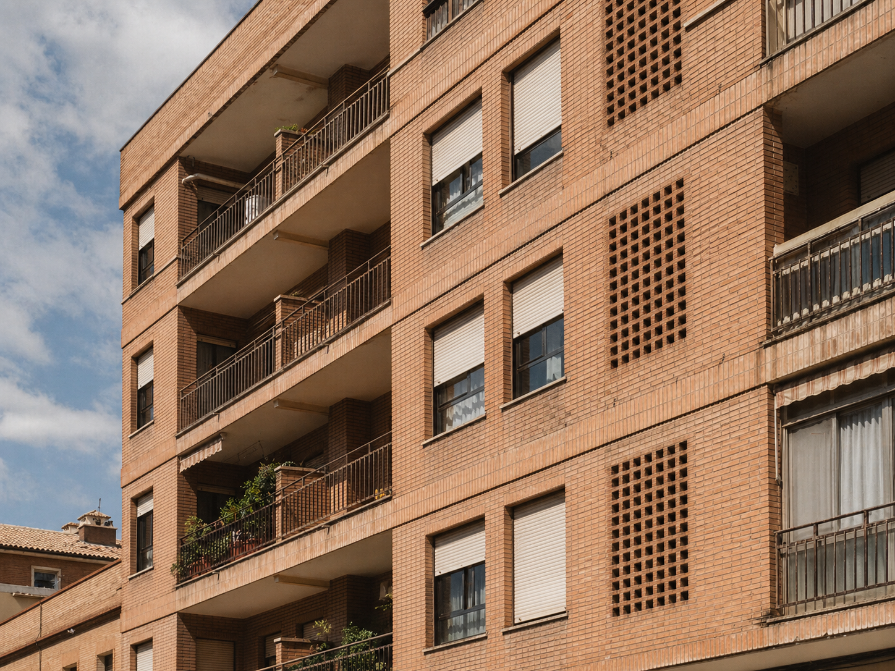
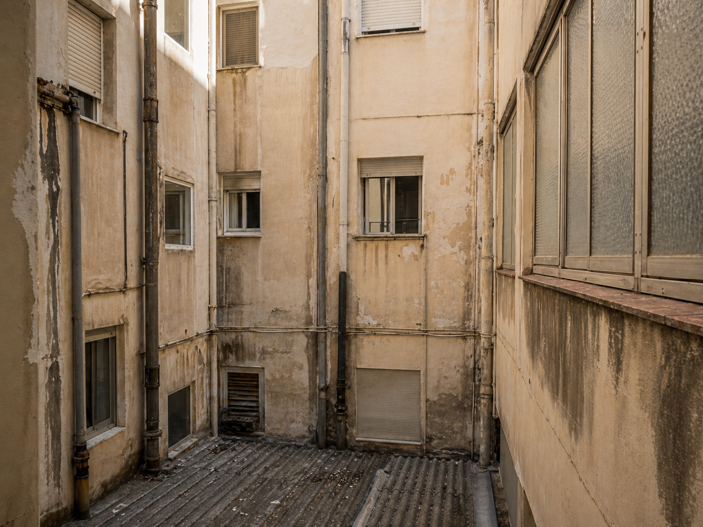
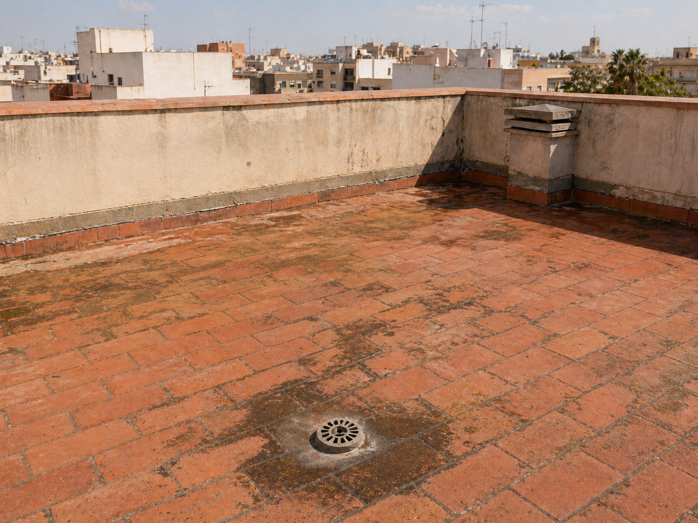
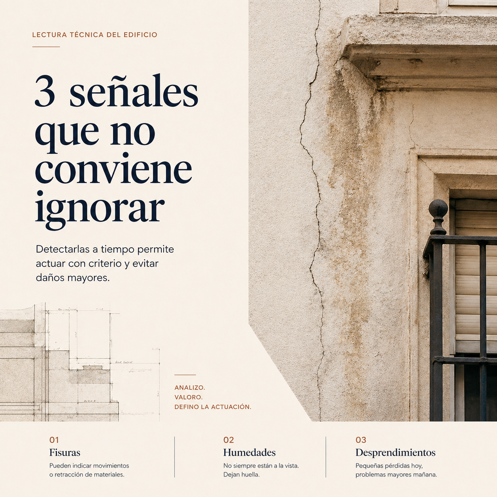
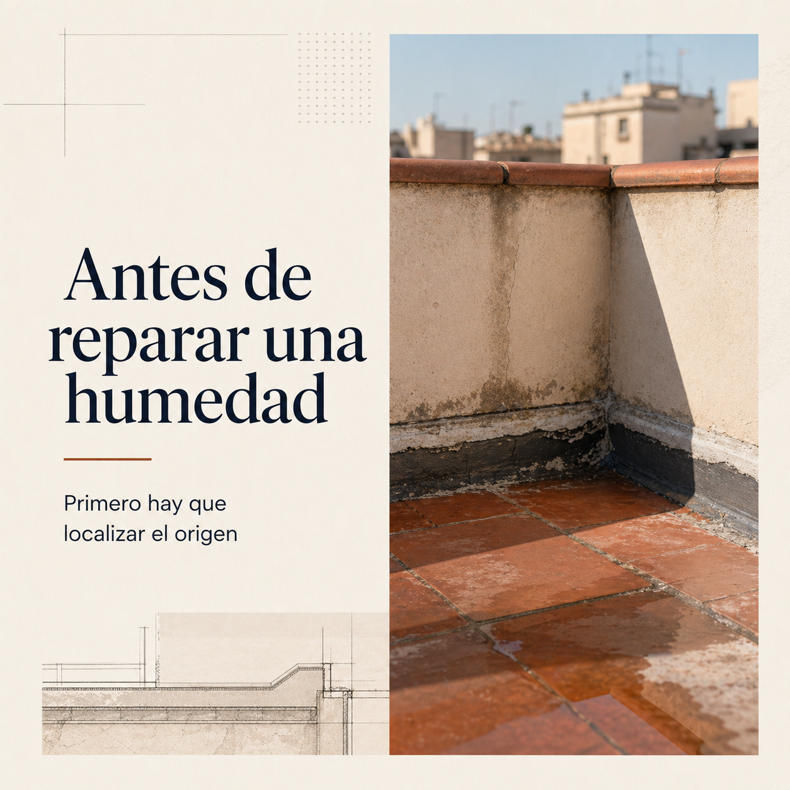
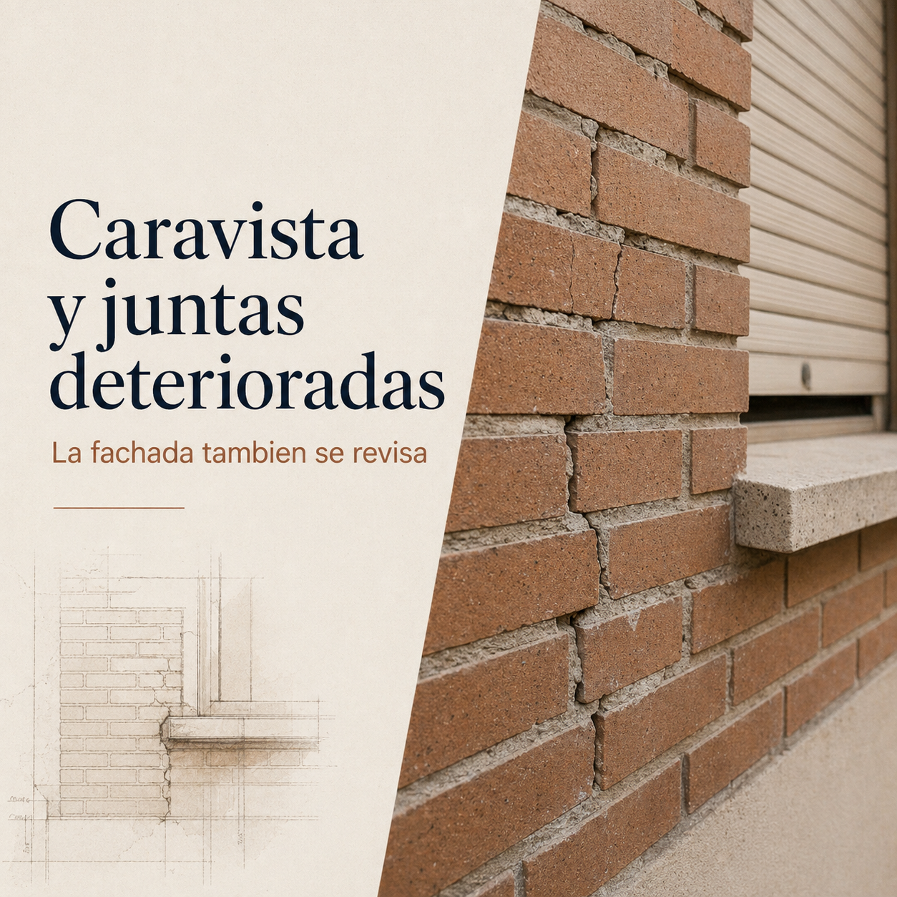

Caso · Cubierta
Cubierta transitable de baldosín catalán con filtraciones
Filtraciones persistentes tras cada lluvia en un edificio de 12 viviendas. Diagnóstico, proyecto y dirección de obra en Elche.
Cada edificio tiene una historia. Lo que parece superficial muchas veces indica algo más profundo.
Cada edificio
plantea una
situación distinta.
Patologías visibles, nuevas exigencias normativas o cambios de uso que requieren adaptación. Mi trabajo como técnico consiste en analizar cada caso, valorar su alcance y definir la actuación adecuada.
— Pedro Gonzálvez Abadía, Elche
Reviso el estado del inmueble, documento lo que encuentro y defino qué hay que hacer y en qué orden. Si hay que ejecutar, también lo dirijo. Trato directo: sin gestor intermedio, sin oficina que filtre el caso.
Cómo entiendo el trabajo técnico
Diagnóstico escrito del estado del inmueble: causa, alcance y recomendación de actuación proporcional. Útil antes de comprar, vender o intervenir, y cuando aparecen anomalías que hay que valorar con criterio técnico.
Consultar este servicioInspección técnica obligatoria por ley: visita al edificio, informe estandarizado y presentación ante el ayuntamiento. Incluye el Informe de Evaluación del Edificio cuando la normativa autonómica lo exige.
Consultar este servicioEficiencia energética, segunda ocupación, antigüedad o estado de conservación: el documento correcto, firmado y registrado. Tramitación completa hasta la obtención del certificado definitivo.
Consultar este servicioLicencia municipal exigida en la Comunitat Valenciana para contratos de arrendamiento de vivienda usada. Visita, informe técnico y gestión ante el ayuntamiento.
Consultar este servicioDiagnóstico, proyecto y dirección de obra para fachadas, cubiertas y elementos estructurales deteriorados. Incluye la coordinación con industriales y el seguimiento de ejecución hasta el cierre.
Consultar este servicioAnálisis y adecuación de barreras arquitectónicas en portal, escalera y fachada para comunidades de propietarios. Proyecto de obras de accesibilidad y dirección de ejecución.
Consultar este servicioProyecto y dirección de obra para la adaptación de vivienda o local a un uso actual o nuevo programa. Memoria, planos y seguimiento hasta la recepción de la obra.
Consultar este servicioEstudio de viabilidad técnica, proyecto de instalación y dirección de obra en edificios sin ascensor. Coordinación con el industrial de la instalación y gestión de licencias.
Consultar este servicio¿No está seguro qué servicio necesita? Cuénteme el caso y lo ordenamos juntos.
La diferencia entre un edificio que aguanta y uno que acumula daño no siempre se ve a simple vista. La inspección técnica lee lo que hay debajo.
Casos documentados, notas técnicas y publicaciones directamente desde el campo.

Filtraciones persistentes tras cada lluvia en un edificio de 12 viviendas. Diagnóstico, proyecto y dirección de obra en Elche.



Las juntas del caravista que nadie revisa

3 señales en su fachada que no debe ignorar

Antes de reparar una humedad, lea esto
Inspección de balcón: lo que se ve y lo que no
La ITE: qué es y para qué sirve
Cómo adaptar un portal sin grandes obras
Cuando el tiempo deja su marca en la fachada

Fachada de caravista: grietas y juntas
Preguntas frecuentes
Las dudas más habituales antes de dar el primer paso. Si la suya no está aquí, cuéntemela directamente.
Cuando aparecen fisuras, humedades o deformaciones que no sabe cómo valorar. Antes de comprar o vender un inmueble con dudas sobre su estado. Cuando el ayuntamiento o la comunidad le pide un documento que no sabe cómo preparar. Una consulta previa no compromete nada y ayuda a ordenar el caso.
En la provincia de Alicante, la ITE es obligatoria para edificios residenciales colectivos de cierta antigüedad, habitualmente a partir de los 50 años, con renovación cada 10. El plazo concreto depende del municipio. Si no se realiza, el ayuntamiento puede imponer sanciones y el seguro del edificio puede quedar comprometido.
Sí, es obligatorio desde 2013 para cualquier contrato de compraventa o arrendamiento. Sin él no puede formalizar la operación. El certificado tiene vigencia de 10 años salvo que haya cambios relevantes en el inmueble.
Es un documento municipal que acredita que una vivienda cumple las condiciones mínimas de habitabilidad. En la Comunitat Valenciana es obligatoria para contratos de arrendamiento de vivienda ya construida. No hay que confundirla con la licencia de primera ocupación, que se tramita al terminar una obra nueva.
La reforma actúa sobre la distribución o los acabados interiores sin alterar la estructura ni la envolvente del edificio. La rehabilitación interviene sobre elementos generales: fachada, cubierta, estructura o instalaciones comunes. La rehabilitación exige normalmente proyecto técnico y dirección de obra; la reforma puede o no, según su alcance.
Sí, siempre que la actuación no modifique elementos estructurales. Una rehabilitación de fachada requiere proyecto, permisos municipales y dirección facultativa. Es conveniente aprovecharla para revisar el estado de juntas, anclajes y encuentros con cubierta, que suelen ser el origen de las patologías.
Contacto
Si el edificio da señales, falta documentación o toca intervenir, el primer paso es ordenar el caso.
Respondo personalmente · plazo < 48 h · sin compromiso